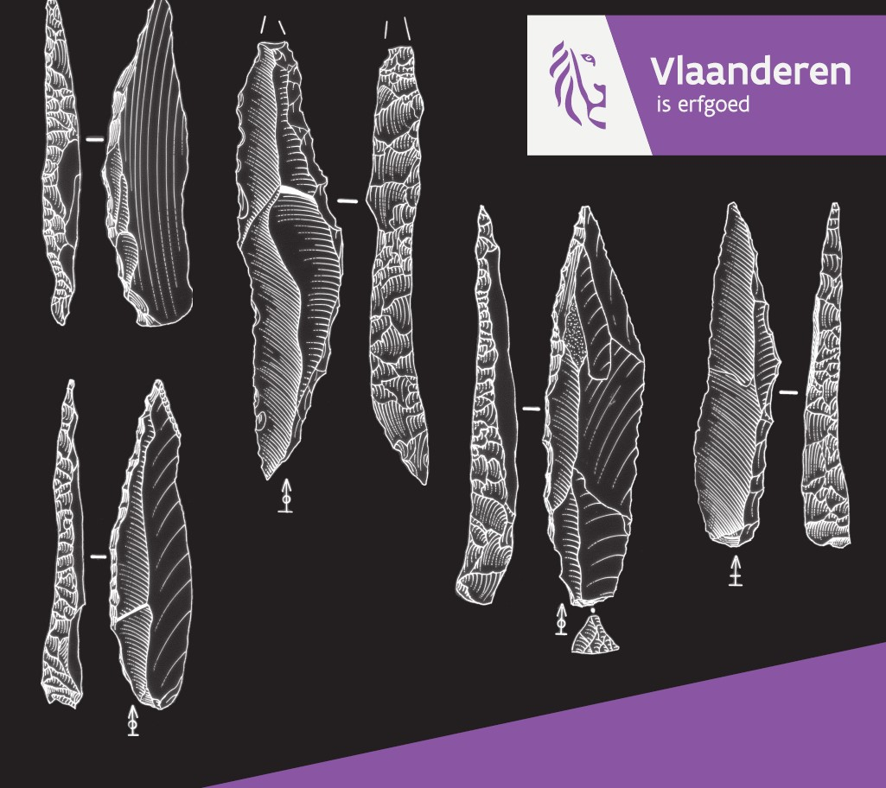
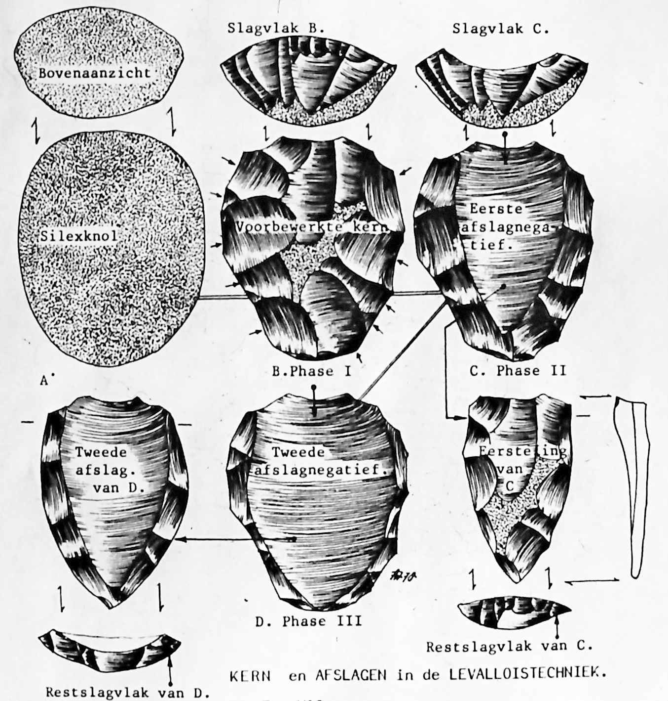

![]()
Woord vooraf

Welkom bij de online versie van de onderzoeksbalans archeologie - het paleolithicum.
Dit deel van de onderzoeksbalans archeologie werd in 2021 gepubliceerd door het agentschap Onroerend Erfgoed en is als pdf te downloaden op de Open Archives Repositiry (OAR).
Met deze online versie willen we aanpassingen aan de originele uitgave, veranderende inzichten en recente kenniswinst sneller ontsluiten. De basis van dit deel van de onderzoeksbalans blijft de originele uitgave, maar hier kan je steeds de meest actuele versie raadplegen.
Andere online publicaties van het agentschap Onroerend Erfgoed vind je hier: https://publicaties.onroerenderfgoed.be/
Citeren
Gelieve te citeren als:
Caroline Ryssaert, Ine Depaepe, Yves Perdaen, Marc De Bie, Philip Van Peer, Philippe Crombé, Marijn Van Gils, Ann Van Baelen, David De Wilde (2021). Onderzoeksbalans archeologie in Vlaanderen, versie 2, 01/06/2021: paleolithicum, Onderzoeksrapporten agentschap Onroerend Erfgoed nr. 191, Brussel. (https://hanecakr.github.io/onderzoeksbalans_paleolithicum/, geraadpleegd op 25-10-2024)
Oorspronkelijke gepubliceerd als:
Caroline Ryssaert, Ine Depaepe, Yves Perdaen, Marc De Bie, Philip Van Peer, Philippe Crombé, Marijn Van Gils, Ann Van Baelen, David De Wilde (2021). Onderzoeksbalans archeologie in Vlaanderen, versie 2, 01/06/2021: paleolithicum, Onderzoeksrapporten agentschap Onroerend Erfgoed nr. 191, Brussel. https://doi.org/10.55465/FTOD7030.
